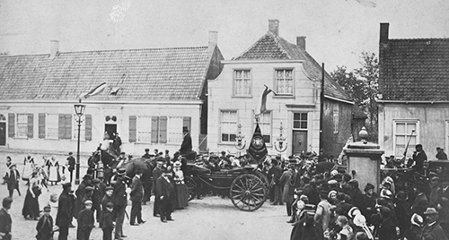

Een klein stukje uit het leven van een ware artiest.
Dit is het huis waar Vincent is geboren
Vincent van Gogh werd op 30 maart 1853 geboren in het Brabantse dorp Zundert. hij was niet het eerste kind van predikant Theodorus van Gogh en Anna Carbentus. Hun eerste zoontje (óók een ‘Vincent’) was precies een jaar eerder, op dezelfde datum, dood geboren. Met de tweede Vincent ging alles gelukkig goed. Er volgden nog drie zussen en twee broers: Anna, Theo, Wil, Lies en Cor. Het gezin Van Gogh wandelde regelmatig in de omgeving van Zundert. Die wandelingen vormden de basis van Vincents liefde voor de natuur.
dit is Vincent op 13 jarige leeftijd